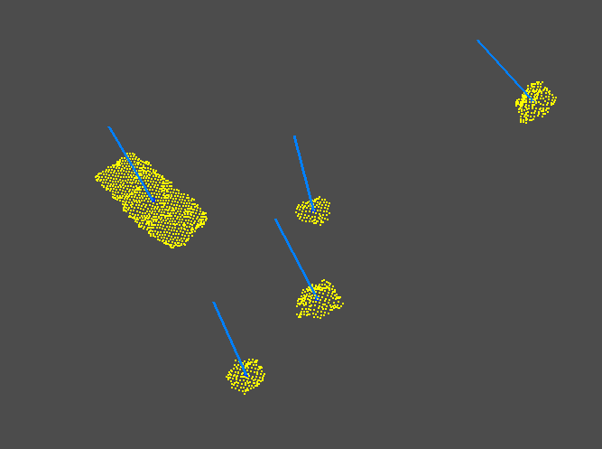
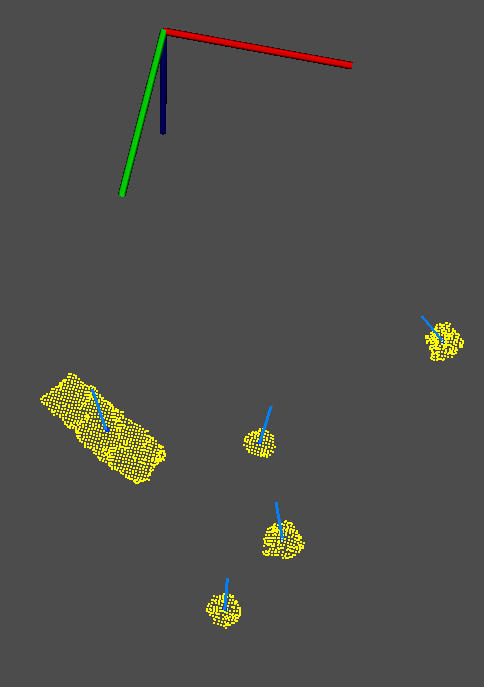

Having now calibrated all the hardware it was now possible to acquire point clouds with the Kinect in the correct position.
Point CloudsCentral Position


After recording some rosbags with different objects on the table I continued the segmentation of the point clouds. I started by using a PassThrough filter to filter along a specified dimension, thus removing points that don't belong to the table and to remove the base of the robot. To identify and remove the table, in order to keep only the objects, the SACSegmentation and the ExtractIndices filters were used. The clustering method used to separate and extract the objects was the Euclidean Cluster Extraction with the pcl::EuclideanClusterExtraction class. This process uses a plane segmentation algorithm which is correctly explained here and the steps of the process are explained here. Having now all the objects separated, each centroid and normal was calculated. To do so, the center of each surface was calculated and the point of the point cloud that is closer to the center was determined. Afterwards, the normals of all the points were calculated and the normal of the center point was the one selected using its index. In the pictures below it is possible to visualize the clusters of the objects with their corresponding centroids and normals.
 